Unit One - Photos
For this unit we will learn some basics
about digital images and photos, then some simple photo editing in
the GNU Image Manipulation Program (Gimp), finally we will explore
Photoshop to see how to do the same things, where available.
Photos
Photo files are stored in what is called a "raster" format. This
means that the image is composed of a grid of points (in rows
and columns). These points are called pixels, and they contain the
color for that point. The number of rows and columns that make up
the grid are called the dimensions. A picture that has 33 Columns
(width) and 22 Rows (height) has dimensions of 33x22, and has a total
of 726 pixels. In general the dimensions of digital images are
always written in the form of "width x height".

Modern digital cameras have much, much higher dimensions. They
are often referred based on how many millions
of pixels or "megapixels" they have. Some examples are:
640x480 = 307200 pixels = 0.3
megapixels
1024x768 = 786432 pixels = 0.8 megapixels
1280x960 =
1228800 pixels = 1.2 megapixels
1600x1200 = 1920000 pixels = 1.9
megapixels
2842x2136 = 6070512 pixels = 6 megapixels
4000x3000
= 12000000 pixels = 12 megapixels
Looking at all these, they have
something in common, if the first number is divided by the second
number, they all approximately equal 1.33. The lowest ratio that
equals 1.33 is 4/3, so this format of images is said to have a 4:3
ratio.

This is usually the standard for
photography, when the camera is held normally - this is also known as a
"landscape" orientation. When the camera is held rotated to the side,
this ratio changes to 3:4 and is called "portrait" orientation.
Other resolutions will be looked at more in the video
unit.
http://en.wikipedia.org/wiki/2D_computer_graphics
The reason that cameras have grown the number of megapixels they
use, is because that (with everything else being equal) larger
dimensions make the image look better, especially when you print it
out. A good printer can print photographs at 4800 dots per inch or
dpi. In this case "inches" (1in = 2.45cm) and "dots" (equal
to a pixel) are used because of their history in the printing
industry.
This means that a 12 megapixel image (4000x3000) could be printed
out to a 2.1x1.6cm image and every pixel would be visible.


However, if it were printed to a 4.2x3.2cm image, then every pixel
would be represented by four dots on the paper. If the sizes were
doubled again to 8.4x6.4cm then every pixel would be represented by
16 dots on the paper. This starts to become a problem when you have
an image without that many pixels in it and want to print (or display
it on a screen) as a large image. At some point, the individual
pixels become easily visible on the printed image, and that can give
it a very blocky and unnatural feeling.
The pictures below are both the same piece of an large image taken
of a tortoise. The photo on the top is from the full size 12
megapixel (4000x3000) image. The photo on the bottom was taken at a
much lower dimension of 640x480. Notice how the pixels of the image
are clearly visible in the lower image and it doesn't look clear.


As a rule of thumb, it is important to keep the best possible
image (most pixels), at least while working with it to edit. The
section on cropping and re-sizing will cover more of the trade-offs
that can be made when getting a picture ready to print or put on the
Internet.
Channels
In a photograph, one pixel can represent many different colors. To
express this in a computer, pixels are represented with different
"channels" for the different colors. A typical image will have
three channels: Red, Green, and Blue, for images without color, they
will have a single channel (different shades of gray). Each channel
states how strong that color is, for example a pixel that has very
strong red channel and very weak green and blue channels would show
up as red. A pixel where all three channels are very strong would be
close to white, and where they are all weak, close to black.
see Dot for Dot
for more information.
The following image is an example of pixels and color channels.
The original image is the tiny face in the upper left corner. In the
second, enlarged version of the face, you can see the individual
pixels of the image, arranged in rows and columns, that make up the
image. Then in the bottom, even more enlarged segment, you can see
three pixels that make up a small area in the bottom-left corner of
the image. This segment has the values for the Red, Green, and Blue
channels written over the top of each pixel.

In this case we can see that to make a medium-gray color we turn
the Red channel up to 80% of its full intensity, the Green channel
also up to 80%, and the Blue channel to 77%. Notice that all three
of these are above 50%, so in all the channel is fairly
bright....this gray color is a lot closer to white than it is to
black. Next, to get a dingy brown, we would put the red and green
channels to 36% and the blue channel only to 13%. Because all these
are significantly less than 50%, the overall color is dark and
getting closer to black. Finally, to get a yellow, we turn the red
and green channels almost all the way up (if we wanted a "true"
yellow we would turn them all the way up) and leave the blue set at
zero.
Try out for yourself adjusting the amounts of Red Green and Blue
in each channel and see what colors you can come up with.
http://developer.yahoo.com/yui/examples/slider/slider-rgb_clean.html
Some raster formats also have a channel called "Alpha" that
specifies how bright the pixel is. If the alpha channel is low, then
it would be possible for an image that is stacked behind the one
being show to show through. This is called transparency. If there
is nothing behind the image, then the default is usually black.
File Types
Photo Size
For a typical photograph, each of the three (Red, Green, and Blue)
channels are represented by one byte of data for each pixel. This
means that it requires three bytes of data for each pixel, this is
often referred to as 24 bit color (24 bits, because 8 bits equals 1
byte and there are three bytes). Because each byte can hold 2^8 or
256 different values, each channel can have 256 different levels of
that color (1/256 or 0.39% change per level if everything is done
evenly). You may have noticed that the R G and B values on the
demonstration we used in the channels section only had 256 different
options, if you don't remember, go back and check it out now:
http://developer.yahoo.com/yui/examples/slider/slider-rgb_clean.html
Because there are three different channels, that means each pixel
can represent 256x256x256 colors or over 16 million different color
combinations. That's a lot more than even the largest box of
crayons.
For an 12 megapixel image from a modern camera, this means that it
would require 36 Megabytes (MB) of storage space! That's a lot when
you go out with your camera and want to take a bunch of pictures. If
you have a 1 Gigabyte (GB) memory card for your camera, that would
only allow you to store about 30 images.
Because of the huge size of files that just contain the pixels,
people have come up with various ways of compressing images into
smaller files. These can be put into two different groups: Lossless
and Lossy.
Lossless Compression
Lossless compression takes the files and finds ways to
mathematically make them smaller, in a way that can be completely
un-done. The easiest way to do this is to run the image through a
general compression tool like zip. Zip is a tool that is available
on all computers, that goes through any file (not just images) and
finds ways to make it smaller. One simple way this is done is if
there are many pixels in an area that are the same color, there can
be an instruction that when the image is drawn to color that whole
area in the correct color. That instruction telling what the
computer to do can be hundreds of times smaller than the amount of
space it would require to store all the pixels in the area. There
are many other ways to do this, but they are generally very
complicated and beyond the scope of this material.
http://en.wikipedia.org/wiki/Lossless_data_compression
Lossy Compression
Lossy compression is different in that once a file is compressed
there is no way to get back the exact same file, some detail is
always lost. Since images are made of millions of pixels each
possible of representing millions of different colors, there is some
room for removing detail before the human eye would notice any
difference. This can be done with a combination of the lossless
compression methods, as well as things like assuming that a color of
one pixel is similar to the pixels surrounding it, and many more
complicated methods. Also beyond the scope of this material.
Below are three examples which illustrate lossy compression. The
example on the left is the original and was compressed with loss-less
compression. The middle picture was compressed with lossy
compression, which was set to not loose very much data. The image on
the right used lossy compression with very aggressive settings. It
made a much smaller file size than the middle one (1.1KB vs 9.4 KB)
but obviously the compression removed parts of the image that are
important for making it look good.


http://en.wikipedia.org/wiki/Lossy_compression
File Storage
There are many different types of files that are used for images,
most of which support one or more specific lossless or lossy
compression methods. Below is an overview of them, there are many
less-used formats in addition that aren't listed here. See:
http://en.wikipedia.org/wiki/Image_file_formats
(verified at:
http://en.wikipedia.org/w/index.php?title=Image_file_formats&oldid=396980331
) or http://en.wikipedia.org/wiki/Comparison_of_graphics_file_formats
(verified at:
http://en.wikipedia.org/w/index.php?title=Comparison_of_graphics_file_formats&oldid=392146069)
for more information.
Bitmap (.bmp, others) -- Contains all the pixels of the
image, without compression. The .bmp format specifically is used by
Microsoft in their programs for displaying images, but similar
methods are used in all types of computers. As it stores all the
pixels, this is a lossless format, in fact by default it is not
compressed at all.
JPEG (.jpg, .jpeg) -- Stands for Joint Photographic
Experts Group, was developed specifically for storing images taken by
digital cameras, and is by far the most used format for digital
photographs. This is a lossy format, however with typical settings
it is very difficult to detect and image degradation.
PNG (.png) -- Portable Network Graphics is better at
storing images that don't have a lot of detail, such as graphics on
websites. This is a lossless format.
GIF (.gif) -- Graphics Interchange Format is similar to
but older than PNG. In general PNG should be used instead, however
there is one feature that it has that PNG currently does not, which
is to be able to have multiple images stored inside it, which can be
played back as a simple animation.
JPEG2000 (.jp2) -- This was an attempt at creating a
better version of the JPEG format, however it has not been very
successful, and is mostly used in professional situations such as
medical imaging. This format has options that can make it lossless
or lossy.
JPEG XR/HD Photo (.jxr) -- This is another attempt at
creating a better version of the JPEG format, originally developed by
Microsoft as "HD Photo" it was submitted to the Joint
Photographic Experts Group who accepted it as a new standard. It has
not yet caught on in mainstream use. This format has options that
can make it lossless or lossy.
WebP (.webp) -- This is a new format developed by Google
that is designed for replacing JPEG (and some PNG) for use in images
on the web. It is not currently supported by all web browsers, but
work is ongoing on it. This format is lossy.
TIFF (.tif, .tiff) -- Tagged Image File Format is used
mostly for images of documents (such as scans). It has support for
multiple pages of images, as well as metadata such as where the image
was collected, who wrote it, etc. Usually it is used as a lossless
format, but it has the ability to use JPEG or other types of
compression inside it.
Raw (.raw, .cr2, .crw, .nef, .nrw, dng, and more) -- Raw
images are not a specific format, but a grouping of many different
formats, all of which are built from cameras. By default cameras
usually produce JPEG images, which are lossy and don't contain all
the basic data that the camera recorded about the image. When a
photographer gets a raw image, he or she gets all the data that the
camera collected, which can be useful when doing advanced processing
of the images on a computer.
XCF (.xcf) -- eXperimental Computing Facility is the name
of the file format used to store projects in the Gimp photo editor. It
stores photographs losslessly, and can store multiple layers of
photos and other data such as text, lines, selections and more.
PSD (.psd) -- PhotoShop Document very similar to the XCF
format, but used by photoshop. It is also lossless, and can store
multiple layers of photographs and data.
Bonus, non raster-image formats:
EXIF - Exchangeable Image File Format is used for metadata
about the image, it is not a file on its own, but is encorporated
into other files such as JPEG. It can contain a huge number of
different data fields including: date the image was taken, camera
settings, exposure time, apeture size, zoom level, GPS coordinates of
the camera, direction the camera was facing, and many more.
SVG (.svg) -- Scalable Vector Graphics files are used to
store images generated on a computer, not photographs. These files
do not store any pixels, but rather store information about where
lines, circles, text, and other components are in relationship to
each other (referred to with vectors). It is called scalable because
the instructions for creating the image can be given any unit of
length and make the entire image based on that. In addition the
instructions for generating the image can include references to
amounts of time, so the image can change as it is drawn making an
animation. Because there are no pixels to be calculated, this is an
inherently lossless format.
EPS (.eps) -- Encapsulated Post Script files as similar to
SVG files, but somewhat older and has more limited features, such as
not being able to do animation.
Exercises
1- Select all of the following image resolutions that are in a 4:3
ratio? (A typical landscape picture)
1920x1080
|
1600x1200
|
640x480
|
720x480
|
1280x720
|
1000x750
|
750x1000
|
720x480
|
1844x1383
|
1152x768
|
1024x600
|
3000x4000
|
1400x1050
|
8:6
|
4000x3000
|
2- How many color channels does a 24-bit photograph have?
A)
24
B)
3
C)
4
D) 6
3- What color to you get from a pixel that has the following components
(8-bit) Red:200, Green:50, Blue:200 ?
A)
Orange
B)
Brown
C)
Purple
D) Red
4- What pixel components (8-bit) make the color yellow?
A) R:255 G:0
B:255
B) R:200 G:200
B:200
C) R:255 G:255 B:
0
D) R:100 G:50 B: 220
5- What is the un-compressed size of a 24-bit, 1600x1200 photo?
A) 5,760
KB
B) 1,920,000
B
C) 1,024
MB
D) 576 KB
6- Lossless images are good for websites where it is important to
have quick downloads.
True
False
7- Lossless images are good for editing images, where it is
important to not lose any quality while editing.
True
False
8- Which image format is most used by consumer cameras?
A)
JPEG
B)
PNG
C)
SVG
D)
TXT
E) PSD
The Gimp
GIMP is a multi-platform photo
manipulation tool. GIMP is an
acronym for GNU Image Manipulation
Program. The GIMP is suitable for a
variety of image manipulation tasks, including photo retouching, image
composition, and image construction.
GIMP has many capabilities. It
can be used as a simple paint program, an expert quality photo
retouching program, an online batch processing system, a mass
production image renderer, an image format converter, etc.
GIMP is expandable and
extensible. It is designed to be augmented with plug-ins and extensions
to do just about anything. The advanced scripting interface allows
everything from the simplest task to the most complex image
manipulation procedures to be easily scripted.
One of The GIMP's strengths is
its free availability from many sources for many operating systems.
Most GNU/Linux
distributions include The GIMP as a
standard application. The GIMP is
also available for other operating systems such as Microsoft Windows" or Apple's Mac OS X" (Darwin).
The GIMP is a Free Software
application covered by the General Public License.
The GPL provides users with the
freedom to access and alter the source code that makes up computer
programs.
Resources:
Manual - http://docs.gimp.org/2.6/en/
http://docs.gimp.org/2.6/en/ - most current version in english
http://docs.gimp.org/2.6/es/ - most
current version in spanish, but parts are not yet translated
http://docs.gimp.org/2.4/es/
- Previous version in spanish, complete translation, but some parts are
out of date
http://docs.gimp.org/2.4/en/
- Previous version in english, some parts are out of date
The Interface
Overview
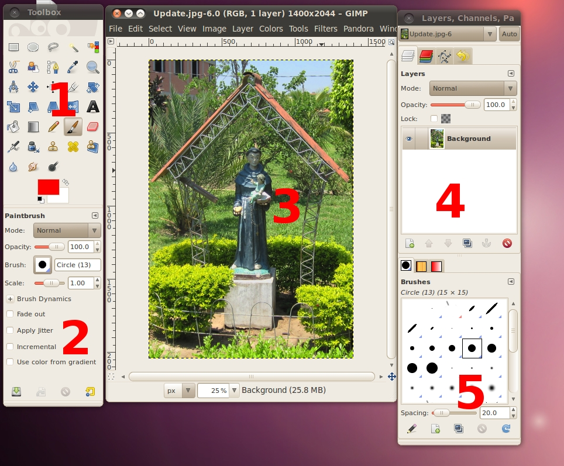
The screenshot above shows the most basic arrangement of GIMP windows that can be used effectively.
-
The Main Toolbox:
Contains a set of icon buttons used to select tools. May also contain
the foreground and background colors; brush, pattern, and Gradient; and
an icon of the active image. Use
-> -> to enable, or disable the extra
items.
-
Tool options: Docked
below the main Toolbox is a Tool Options dialog, showing options for
the currently selected tool (in this case, the Smudge tool).
-
An image window: Each
image open in GIMP is displayed in
a separate window. Many images can be open at the same time, limited by
only the system resources. Before you can do anything useful in GIMP, you need to have at least one image
window open. The image window holds the Menu of the main commands of GIMP (File, Edit, Select...), which you can
also get by right-clicking on the window.
-
The Layers, Channels, Paths
dock with the Layers Dialog open; note that there are several tabs at
the top of area, each of these is a different dialog. This dialog
window that is open shows the layer structure of the currently active
image, and allows it to be manipulated in a variety of ways. It is
possible to do a few very basic things without using the Layers dialog,
but even moderately sophisticated GIMP
users find it indispensable to have the Layers dialog available at all
times.
-
Brushes/Patterns/Gradients:
The docked dialog below the layer dialog shows the dialogs (tabs) for
managing brushes, patterns and gradients.
This is a minimal setup. There are over a dozen other types of
dialogs used by GIMP for various
purposes, but users typically open them when they need them and close
them when they are done. Knowledgeable users generally keep the Toolbox
(with Tool Options) and Layers dialog open at all times. The Toolbox is
essential to many GIMP operations;
in fact, if you close it, GIMP will
exit after confirming that that is actually what you want to do. The
Tool Options section is actually a separate dialog, shown docked to the
Main Toolbox in the screenshot. Knowledgeable users almost always have
it set up this way: it is very difficult to use tools effectively
without being able to see how their options are set. The Layers dialog
comes into play when you work with an image with multiple layers: after
you advance beyond the most basic stages of GIMP
expertise, this means almost always.
And of course it helps to display the images you're editing on the
screen; if you close the image window before saving your work, GIMP will ask you whether you want to close
the file.
The Image Window

An image window exists, even if no image is open. The Title Bar in
an image window without an image reads "GNU Image Manipulating Program". An image
window with an image displays the image name and its specifications in
the title bar according to the settings in Preference
Dialog. Each window displays exactly one image, or no image if
no image is open. Each image is displayed in one or more image windows;
it is unusual to display the same image in more than one window. We
will begin with a brief description of the components that are present
by default in an ordinary image window. Some of the components can be
removed by using commands in the View menu.
-
Title Bar: The top of
the image window typically displays a Title Bar with the name of the
image and some basic information about the image. The Title Bar is
provided by the operating system, not by GIMP,
so its appearance is likely to vary with the operating system, window
manager, and/or theme. Use the Preferences dialog
to customize the information that appears in the Title Bar.
-
Image Menu: Directly
below the Title Bar appears the Image Menu (unless it has been
suppressed). The Image Menu provides access to nearly every operation
you can perform on an image. You can also right-click on an image to
display a pop-up image menu, or by left-clicking on the little arrow symbol in the
upper left corner, called the Menu Button:,
if for some reason you find one of these more convenient. Many menu
commands are also associated with keyboard shortcuts
as shown in the menu. You can define your own custom shortcuts for menu
actions, if you enable Use Dynamic Keyboard
Shortcuts in the Preferences dialog.
-
Menu Button: Click the
Menu Button to display the Image Menu in a column. If you like to use
keyboard shortcuts, use Shift+F10 to open the menu.
-
Ruler: In the default
layout, rulers are shown above and to the left of the image. Use the
rulers to determine coordinates within the image. The default unit for
rulers is pixels; use the settings described below to use a unit other
than pixels.
One of the most important uses of rulers is to create guides. Click and drag a ruler into
the image to create a guide. A guide is a line that helps you
accurately position things or verify that another line is truly
horizontal or vertical. Click and drag a guide to move it. Drag a guide
out of the image to delete it; you can always drag another guide into
the image. You can even use multiple guides at the same time.
-
QuickMask Toggle: The
small button in the lower left corner of the image toggles the Quick
Mask on and off. When the Quick Mask is on, the button is outlined in
red. See QuickMask in the GIMP manual for
more details on this highly useful tool.
-
Pointer Coordinates:
When the pointer (mouse cursor, if you are using a mouse) is within the
image boundaries, the rectangular area in the lower left corner of the
window displays the current pointer coordinates. The units are the same
as for the rulers.
-
Units Menu: Use the
Units Menu to change the units used for rulers and several other
purposes. The default unit is pixels, but you can quickly change to
inches, cm, or several other possibilities using this menu. Note that
the setting of "Dot for dot"
in the View menu affects how the display is scaled: see Dot for Dot in the GIMP manual for more
information.
-
Zoom Button: There are
a number of ways to zoom the image in or out, but the Zoom Button is
perhaps the simplest. With GIMP-2.6, you can directly enter a zoom
level in the text box for very fine control.
-
Status Area: The Status
Area is at the bottom of the image window. By default, the Status Area
displays the active part of the image, and the amount of system memory
used by the image. Use -> -> ->
to customize the information displayed in the Status Area. During
time-consuming operations, the status area temporarily shows the
running operation and how complete the operation is.
Note that the memory used by the image is very different from the image
file size. For instance, a 70Kb .PNG image may occupy 246Kb in memory
when displayed. There are two primary reasons the difference in memory
usage. First, a .PNG file is compressed format, and the image is
reconstituted in memory in uncompressed form. Second, GIMP uses extra memory, and copies of the
image, for use by the Undo command.
-
Cancel Button: During
complex time-consuming operations, usually a plug-in, a Cancel button
temporarily appears in the lower right corner of the window. Use the
Cancel button to stop the operation.
-
Navigation Control: This
is a small cross-shaped button at the lower right corner of the image
display. Click and hold (do not release the mouse button) on the
navigation control to display the Navigation Preview. The Navigation
Preview has a miniature view of the image with the displayed area
outlined. Use the Navigation Preview To quickly pan to a different part
of the image move the mouse while keeping the button depressed. The
Navigation Window is often the most convenient way to quickly navigate
around a large image with only a small portion displayed. (See Navigation Dialog for other ways to access the
Navigation Window). (If your mouse has a middle-button, click-drag with
it to pan across the image).
-
Inactive Padding Area:
This padding area separates the active image display and the inactive
padding area, so you're able to distinguish between them. You cannot
apply any Filters or Operations in general to the inactive area.
-
Image Display: The most
important part of the image window is, of course, the image display or
canvas. It occupies the central area of the window, surrounded by a
yellow dotted line showing the image boundary, against a neutral gray
background. You can change the zoom level of the image display in a
variety of ways, including the Zoom setting described below.
-
Image Window Resize Toggle:
Without enabling this feature, if you change the size of the image
window, the image size and zoom does not change. If you make the window
larger, for example, then you will see more of the image. If this
button is pressed, however, the image resizes when the window resizes
so that (mostly) the same portion of the image is displayed before and
after the window is resized.
Drag and drop an image into the Toolbox window to open the image in its
own Image window. This is very different than dragging an image into an
existing Image window, which adds it to the currently open image in a
new layer usually not what you want.
Undoing
Almost anything you do to an image in GIMP
can be undone. You can undo the most recent action by choosing ->
from the image menu, but this is done so frequently that you really
should memorize the keyboard shortcut, Ctrl+Z.
Undoing can itself be undone. After having undone an action, you
can redo it by choosing ->
from the image menu, or use the keyboard shortcut, Ctrl+Y. It is often helpful to judge
the effect of an action by repeatedly undoing and redoing it. This is
usually very quick, and does not consume any extra resources or alter
the undo history, so there is never any harm in it.
If you undo one or more actions and then operate on the image in
any way except by using Undo or Redo, it will no longer be possible to
redo those actions: they are lost forever. The solution to this, if it
creates a problem for you, is to duplicate the image and then test on
the copy. ( Do Not test the
original, because the undo/redo history is not copied when you
duplicate an image.)
If you often find yourself undoing and redoing many steps at a time,
it may be more convenient to work with the Undo
History dialog, a dockable dialog that shows you a small sketch
of each point in the Undo History, allowing you to go back or forward
to that point by clicking.
Undo is performed on an image-specific basis: the "Undo History" is one
of the components of an image. GIMP
allocates a certain amount of memory to each image for this purpose.
You can customize your Preferences to increase or decrease the amount,
using the Environment page of the
Preferences dialog. There are two important variables: the minimal number of undo levels, which GIMP will maintain regardless of how much
memory they consume, and the maximum undo
memory, beyond which GIMP
will begin to delete the oldest items from the Undo History.
GIMP's implementation of Undo is
rather sophisticated. Many operations require very little Undo memory
(e.g., changing visibility of a layer), so you can perform long
sequences of them before they drop out of the Undo History. Some
operations, such as changing layer visibility, are compressed, so that doing them
several times in a row produces only a single point in the Undo
History. However, there are other operations that may consume a lot of
undo memory. Most filters are implemented by plug-ins, so the GIMP core has no efficient way of knowing
what changed. As such, there is no way to implement Undo except by
memorizing the entire contents of the affected layer before and after
the operation. You might only be able to perform a few such operations
before they drop out of the Undo History.
Most actions that alter an image can be undone. Actions that do not
alter the image generally cannot be undone. Examples include saving the
image to a file, duplicating the image, copying part of the image to
the clipboard, etc. It also includes most actions that affect the image
display without altering the underlying image data. The most important
example is zooming. There are, however, exceptions: toggling QuickMask
on or off can be undone, even though it does not alter the image data.
There are a few important actions that do alter an image but cannot
be undone, specifically: Closing the Image, Reverting the Image, and
"Pieces" of Actions.
Opening and Saving an Image
Here we will use the GIMP to open, modify and save our image. For
starters, lets grab an image, right click on this image link, and
select the option to save it to the disk.
Now, lets open up the GIMP program. Once it is open, use the
File->Open... command to bring up the File Open dialog. Select
the file that you just saved to the disk an click the "Open"
button.
Your screen should now look something like this.

Congratulations...you're successfully using the GIMP!
Now, lets do something to the image, and save it as a different file.
Click the paintbrush button:
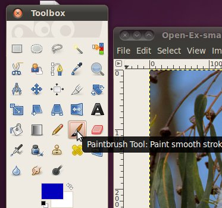
Now go ahead and draw something on top of the image...don't worry about
what it looks like. If you want to start over, use the "Revert"
command. Simply click File -> Revert.

Now that we're done drawing, we want to save it, but we don't want to
overwrite the original file. So, we're going to go to File ->
Save As... and pick a new name and a location to save to on the
disk. Be sure that the file name ends in .jpg (or .jpeg) so that
the GIMP knows how to save it correctly. Then click the save
button.
Now you will see a dialog asking what quality you want your image to be
saved at. The higher the number, the less data is lost during the lossy
compression and the larger the file. Lower numbers will give you
smaller files, but will cause the image to look bad! To help
figure out what kind of trade-off between size and quality you should
make, click the box for "Show preview in image window". You may
have to drag that dialog or the "Save Image" dialog out of the way to
see your image as the preview is applied. When you're happy with
it, click the save button.
Here's an example of setting the quality very low, which makes the
preview image look terrible....I didn't save it like this!

Congratulations, you're well on your way to working with photos in the
GIMP!
Rotation, Cropping, Re-sizing
Rotating, cropping, and re-sizing are three of the most basic, and
easiest ways you can transform an image to make it match what you need
from it.
For the activities in this section, we
will work with the image you can get from this link here, right
click on the link and save it to your disk.
Rotation
When working with photographs, you will
often come across ones where the photographer wasn't holding the camera
perfectly level while they took the image. This is easy to
correct in the GIMP by rotating the image back in to level.
Once we have the image open, we will select the rotate tool from the
toolbox.

Once you are in the rotate tool, simply
click on the picture and while you are still holding down the mouse
button, move the mouse. This will spin the image around, just
spin it to an orientation that looks correct. The post that the
subject is leaning against should be vertical and the light/shadow line
just under her should be horizontal, but it doesn't have to be exact,
just close enough to look good. If it helps, you can use the zoom
button at the bottom of the image window to zoom in closer on the
subject.
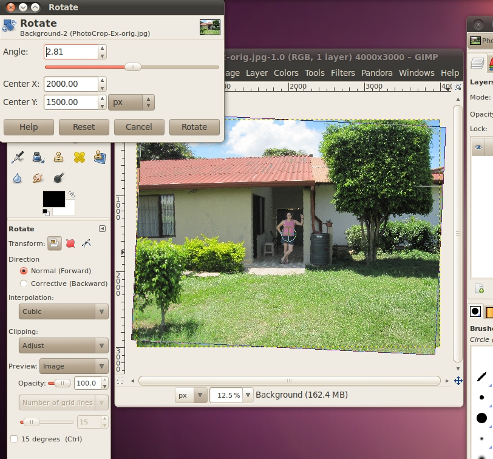
When you are done moving it, and you
like how it looks, click the Rotate button. The GIMP will process the
image for a moment, and then you will have your new, rotated
image! (You can save now to make sure you don't loose your work)
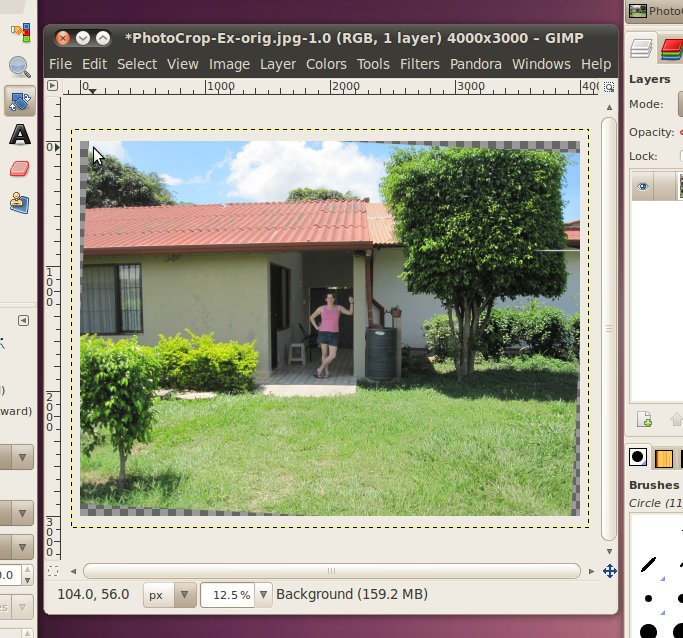
But now we have a bit of a
problem! The image has gray checkered borders! (This gray
checkered pattern is what the GIMP displays when there is nothing
there, it means that those pixels of the image are completely
blank.) Since we took a rectangular image and rotated it while
continuing to display it in a rectangular area, we had gaps appear (and
other areas disappeared). This usually isn't a big problem, if
you are otherwise happy with the image, you can just use the cropping
tool to cut the image down a little bit. However, we're not happy
with the image yet, so we're going to do some other things first...
Cropping
First, the word. In general the
word to "crop" is used in all kinds of publishing, art, graphic design,
photography, etc., it just means to cut the edges off of
something.
There are two main reasons to crop a
photo. The first is the subject only takes up a small area of the
photo. In this case, you can crop the photo down so that the
subject is the majority of what is being shown. The second
important reason to crop an image is to improve the spacing between
various elements in the image. This is a little more complicated
than the first reason. Most amateurs who take photos
incorrectly believe that the picture will look the best when the
subject of the image is directly in the center. However, over the
years artists have figured out that this isn't correct. It is
more pleasing to the human eye when subjects are 1/3 or 2/3 of the way
across or down an image.
Think of your image in terms of a grid. The ideal locations for a
subject are at the intersections of the lines, represented on this
diagram by gray dots. If that isn't possible, or feasible, then
you can try to line up large features under the vertical and horizontal
lines.

It can often be tricky to figure out what are the subjects, or fit all
the important features in a photo and still use the rule of
thirds.
Don't worry! This isn't an exact science, its just a good rule of
thumb to keep in mind.
For an example, there are two images below. The one on the right
has the large rock outcrop centered in the middle of the image.
The one on the right uses the rule of thirds to put the rock outcrop
1/3 of the way over from the left side. Additionally, the horizon
(where the rocks meet the sky) is 1/3 of the way up from the top and
the parallel clouds take up the top 1/3 of the image.

You may notice that the one on the left
feels somewhat more open, and less crowded. It is generally
better to not have crowded photos. Additionally, notice that to
get this less crowded feeling, the size of the features didn't have to
be changed. The rock and the background are the same size in both
images.
Lets continue with the image we were working on before. To crop,
we will select the crop tool from the toolbox:

We can go ahead and crop the picture down so that just the interesting
stuff in the center around the subject is visible. Move the mouse
to
the upper-left corner of the area you want to be visible. Then
click
the mouse button, and while you are holding it down, move the mouse to
the lower-right corner of the area you want. The GIMP darken the
area that will be cut-off, so that the clear area will be what remains
after the crop. When you are happy with the area, let go of the
mouse button.

If you then decide you want to change the area some how, you can hover
your mouse button over the area near the edges. It will pop up a
box indicating that you are going to change that edge (works with
corners also, then two edges will move). In the above example, I have
the box up for the right edge of the crop area. To move this
edge, just hold down the mouse button and move it until you are happy
with the new area. When you are done click the mouse button once
somewhere inside the clear area to complete the crop.
But hang on, as was discussed previously, 4:3 generally a good ratio
for photographs, it would be nice if the image we had when we were done
was still 4:3. Luckily the GIMP crop tool has an option that can
be set for just this purpose. We do this in the "Tool Options"
dialog below the toolbox. You may have noticed that when we
selected the crop tool, this dialog automatically changed to the
options for the crop tool. This will happen whenever you select a
new tool, so that the options displayed here always match the tool you
are working with.
We're going to go ahead and check the box in front of "Fixed:" and
select the "Aspect Ratio" option from the box. Then in the text
field just below that line, we will put in the ratio of 4:3.

Now, try cropping the image again, to get back to the image one step
before hit the buttons "Ctrl" + "z" one time to undo your previous
crop. (You can also do this in the menu Edit->Undo Crop Image)
You notice that when you move your mouse to select the area that will
be kept, the box is a bit more rigid. With the fixed aspect
ratio, it is not possible to increase one of the sides without
increasing one of the adjacent ones.
Alas, we're not quite done...we haven't used our rule-of-thirds yet on
the area that we're going to crop. Again, The GIMP is there to
help us with this. The crop tool has an option for displaying a
"Guide" that puts lines for the rule of thirds up in your window as you
select your area. To activate it simply select "Rule of thirds"
from the guides selection drop-down in the Crop tool box. (It
probably currently says "No guides" in your tool options)

Alright, now we're set for our final try at cropping. If you
currently have an already cropped image on your screen, hit Ctrl+Z
until you get back to the image you had after you rotated it. Now
select an area that has the subject occupying a large part of the area,
is in 4:3 ratio, and uses the rule of thirds and crop it!
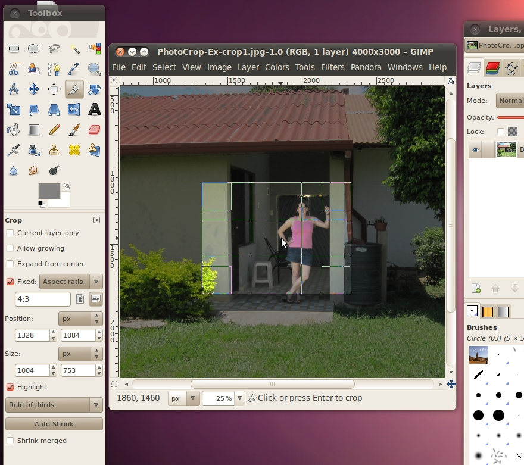
And now we get our final, cropped image:

Re-Sizing
You may have noticed that the image that we just finished with took up
most of your browser window, even after we cropped off a huge part of
it. Since digital cameras these days are capable of taking such
large, high-resolution pictures, this is a fairly common problem when
pictures are used on the web. It is possible to have the site
tell the web browse to shrink the picture and not display it at full
size, but then you still have to transfer the whole picture.
Because the picture is so big, it has to store all those pixels, and
the file size is also big. The above image is 131KB, which isn't
huge, but it can make the site slow to load, especially if you have
lots of pictures like that. Instead, what should be done, is the
image should be re-sized down to be the correct size for
displaying. Changing the size in this manner will not change what
it looks like on the web site (if displayed at the same
resolution). This is different from using the quality selector
when saving the image, as that does change how the image looks (just
hopefully not so the eye can make it out).
A quick note, there is almost never a good reason to re-size a picture
to something larger. When you make it smaller, the program doing
the shrinking can easily take out pixels to make it the correct
size. However, if you were to try to make it larger, it doesn't
know what the pixels in between the current pixels should be to add
in. So what it does is it just guesses, based on what pixels are
around it. This will indeed make it larger, but will also
increase the file size of the image. If you want a larger image
on your web site, that is when it is better for the site to tell the
web browser how big the image should be.
Re-sizing in the GIMP is easy. Just go to Image -> Scale
Image. You will see the Scale Image dialog on the screen.
Now you can input the size you want for an image.
If you have a web site, you may already know exactly how man pixels you
want the image to be. To do this, you can select "pixels" in the
first drop down box, then put the number of pixels you want for the
width or height. You only have to put one of the values in, and
the GIMP will automatically calculate the other. It is possible
to change them independently (by clicking the little chain between them
to un-link them), but this should almost never be done because it will
cause the image to distort and make it look stretched out.
If you don't already know the exact dimensions you need your image to
be, it is generally easier to re-size it to a percentage of the
original. To do this select "percent" from the first drop down
box, then enter your best get at what percent of the original you want
your new image to be.
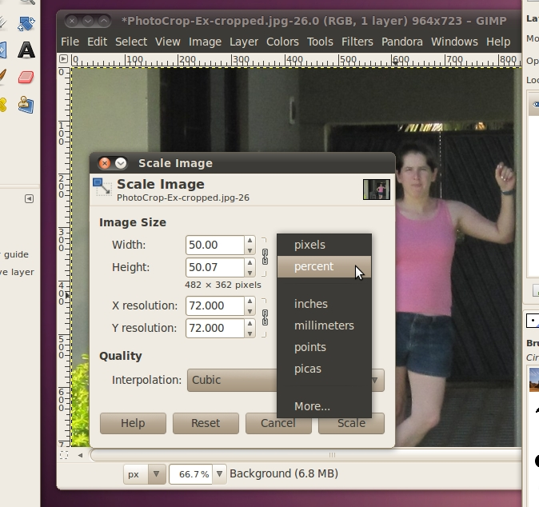
If you're happy with your image, you can go ahead and save it. If
you're trying to make it small for a web site, don't forget to adjust
the quality selector to make it as small as you can.
After all that rotating, cropping, and re-sizing, here's the final
image. Its only 24KB, when we started with a 3900KB original!
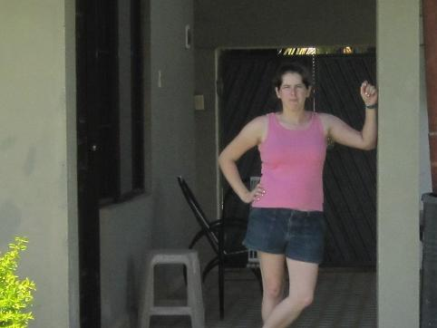
Exercise
These three images are quite similar to the original, they can all be
rotated, cropped, and re-sized.
PhotoCrop-A-orig.jpg
PhotoCrop-B-orig.jpg
PhotoCrop-C-orig.jpg
Selection and Redeye Correction
We have all seen photos in the past where the eyes of the subject(s)
are not their normal color but bright red. There can be various
levels of this ranging from barely detectable to very bright red.
This is caused by light from the flash on the camera reflecting off the
blood vessels on the back of the eye and back to the camera.
For more info, see: http://en.wikipedia.org/wiki/Red-eye_effect
Since this is such a common problem in photographs, the GIMP has a
built in tool for removing it which we will work with in this
section.
First, lets save this
file to your disk, and open it with the GIMP.
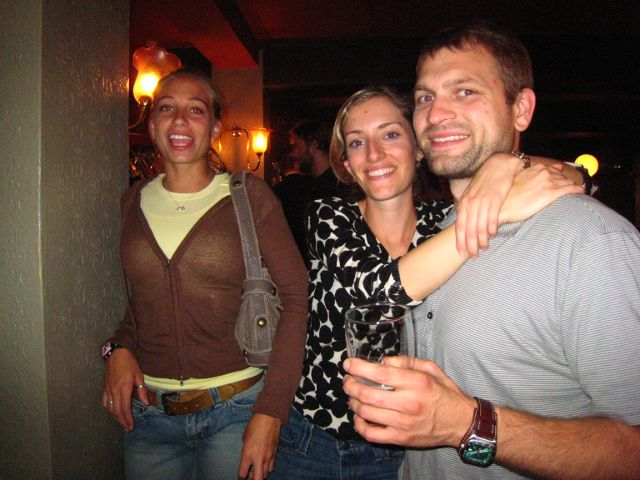
You can see that there are three examples of red eye here. Two
(the woman on the left and the man) have a large amount, and the woman
in the middle just has a little showing.
To correct the red eye, we will run the red eye removal tool. You
can find it under Filters->Enhance->Red Eye Removal.

If all works well, you should be able to just click the button and have
it remove all the red eye. Go ahead and try it now.
Ahhhh! What happened!!! It looks like the people have mold
growing on them, this is terrible.
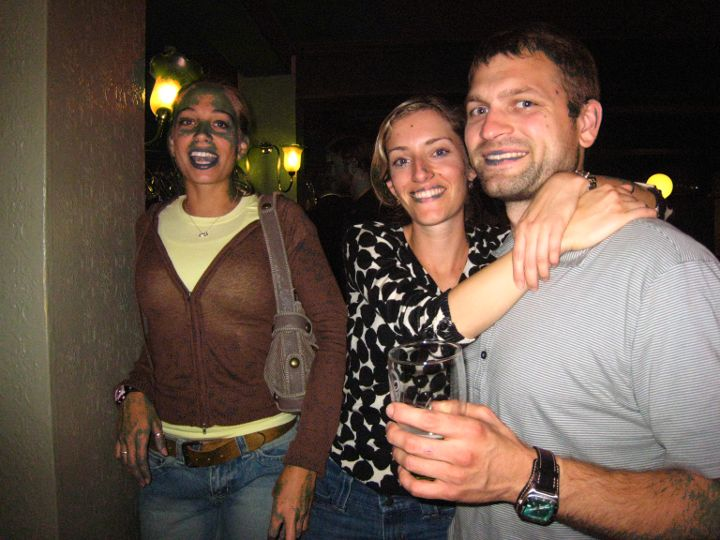
What the tool did was go through the whole photo and find all the spots
where there was a lot of red, and try to remove it. Unfortunatley
this photo had lots of spots like that...the people's lips, the woman
on the left's face, the wall in the background, etc. You could
try using the slider to lower the threshold so it doesn't pickup as
much, but that doesn't work very well for this image either, but lets
try it anyway.
This time lets use the preview window to zoom in on the face of the
woman on the left. As you move the slider around, you will see
that before most of the red from her eyes is gone, there are strange
artifacts showing up on her lips.
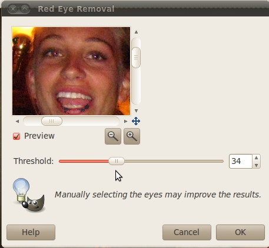
Instead of just using this tool, we're going to have to try a different
tactic to fix this image. We're going to use the selection tool
to select just her eyes, then run the red eye tool on just that
selected area. We will soon find that using the selection tool is
very powerful and the ability to select certain areas of photos make
almost all the things that you can do with the GIMP possible.
Even the cropping that we did in the last section is just a set of
special functionality layered over the selection tool, in fact you can
do all the things we did in the last section by simply making a
selection and then clicking Image -> Crop to selection.
Lets start by selecting the Rectangle Select Tool from the toolbox.
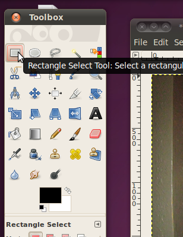
Using this tool is almost exactly the same as using the crop tool,
except when you are done you have a selection of the image, not a
smaller image. Lets use it to create a rectangle around one of
the woman on the left's eyes. Zoom in if you need to, so you
don't select too much else.

If you now click inside the selection (or hit Enter) the selection will
stick, but you don't need to do this, you can run tools on it even
before it sticks.
Now lets go back and run the Red eye reduction filter again. This
time we can turn the threshold up a bit higher, because there isn't
much else that is very red in the image.

Now that we've got that down, we can go ahead and do it to the other
five eyes in the image.

I'd say they are looking much better! Its still not a great
photograph, but at least they don't look like they are possessed by the
devil.
Exercises
These images are all examples of red eye that can be removed by
selecting the eyes and running the red eye removal tool on them.
Redeye-A-orig.jpg
Redeye-B-orig.jpg
Redeye-C-orig.jpg
Advanced Selection and Layers
Now that we have some of the basics like
resizing and selecting down, we're going to get a little more
advanced. In this section we are going to combine two separate
pictures into one photo-like image that could conceivable been taken by
a person with a camera, but wasn't. This is a powerful tool that
can be used to deceive others by making them think that something
really happened when in actuality it didn't. Many people have
tried to deceive others with this, and many have been found, such as
Iran, trying to show that it launched four missiles when it only
launched three:
http://boingboing.net/2008/07/10/iran-you-suck-at-pho.html. As a
photo editor, it is your job to use these tools responsibly.
We're going to start by taking a picture
of an airplane
putting it into the background of a picture of the Statue of Liberty.
An Airplane
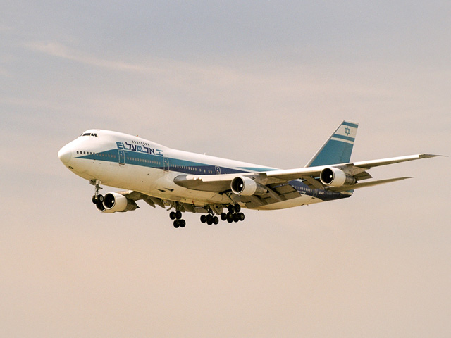
The Statue of
Liberty
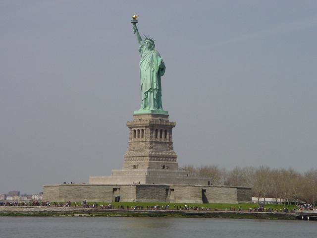
Go ahead and save those to files to your disk, then open them up in the
GIMP. Since this is a more complicated project than our past
ones, we're going to save the Statue of Liberty picture into a separate
file that GIMP uses to store all the data about the project. This
is an XCF (eXperimental Computing Facility) file, and it stores all the
image data in a lossless format, as well as data about layer and
channels which we will be using for this project. To save as this
type of file, in the Statue of Liberty image go to File -> Save As,
then in the name box, change the extension from .jpg to .xcf and click
the save button.
The basic premise of how we are going to add the airplane into the
Statue photo is that we are going to select just the airplane (without
any of the sky background) from its photo, then copy and paste that
into the statue of liberty. Then we'll get on to another trick to
make it look even better.
There are several different ways to do the selection. We could do
the rectangular selection like we did in the last image, but then
you'll end up with all the sky from the airplane picture that was in
the box in the statue picture.
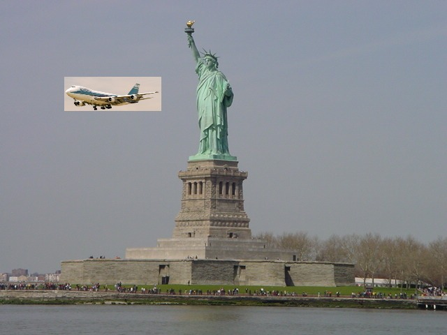
It doesn't look very natural. We'll need to use one of the
selection tools that will get us just
the airplane.
The most basic tool for selecting a specific area, of an arbitrary
shape is the "Free Select" or Lasso tool. This tool will let us
draw whatever shape we want on the screen, and when we connect the line
back to the start, it selects that area.
Lets pick the "Free Select" tool.
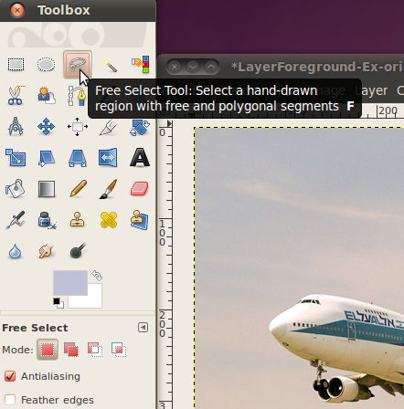
Now that we have the tool selected, we can start to outline the
airplane. It will be much easier to find the correct points to
select if you zoom in, I use 400%. Just find a spot on the border
between the airplane and the sky, and click to make your first
point. Then move the mouse cursor either clockwise or counter
clockwise to another nearby pixel that separates that airplane and the
sky. You will see a line extend between the first point and your
cursor. Adjust your cursor so that the line follows the edge
between the airplane and the sky. If you chose the complicated
area with the landing gear and engines, this could be a very short
line. On the other had, if you started on the top, this line will
be quite a bit longer.
Here's my line that started on the top, went over a little bump (an
antenna) around the cockpit and is currently at the nose:

This is going well, but when you keep going and get into the more
complex parts of the picture, this will start to get very tedious. There are so
many small parts that it would take hundreds of clicks to make lines
that accurately separate them out.
A better tool for getting all this complex stuff, is the Intelligent
Scissors tool. Lets go pick that.

The Intelligent Scissors tool is an interesting piece of equipment: it
has some features in common with the Lasso, some features in common
with the Path tool, and some features all its own. It is useful when
you are trying to select a region defined by strong color-changes at
the edges. To use the Scissors, you click to create a set of "control
nodes", also referred to as anchors or control points, at the edges of
the region you are trying to select. The tool produces a continuous
curve passing through these control nodes, following any high-contrast
edges it can find. If you are lucky, the path that the tool finds will
correspond to the contour you are trying to select.
We can start using it similarly to the Free Select tool, put down a
point on the edge of the border between the airplane and the sky.
Then move along that border and place another point. Although,
this time you won't see a line from the previous point to the cursor,
you just have to pick a point. Then when you click the computer
will try to determine what the natural border is that both the points
are on, and make a line that matches that border. If you are
still zoomed in to 400%, this will look a bit jagged, that is usually
because we're dealing with individual pixels at this level and they
don't follow a very clean border. Don't worry too much about it,
when we shrink this airplane down to put it in the statue picture, you
won't be able to tell.
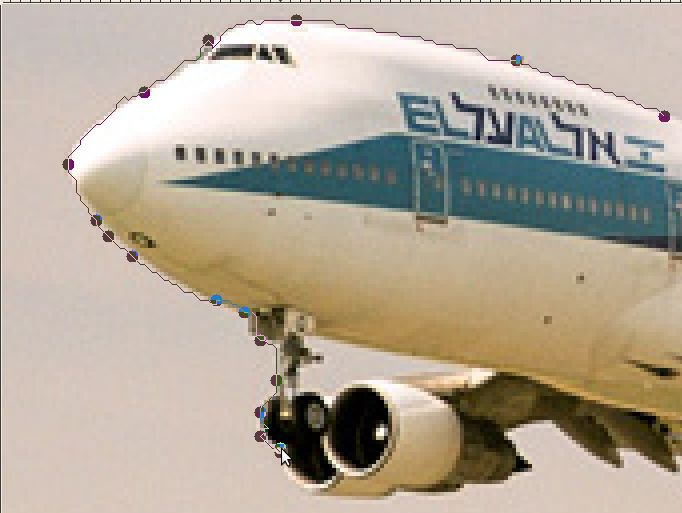
Sometimes the computer won't guess correctly where the line should go,
as in this case

For some reason, it decided on a line through the engines, instead of
between the engines an the sky, but don't despair, its easy to
fix. We're just going to add another point in between those to to
make it work out better. Any place you don't like where the
computer though the line should go, you can easily add a new
point. Just click the existing line to make the point.
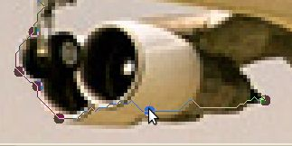
Then click and drag that new point down to the correct place for
it.
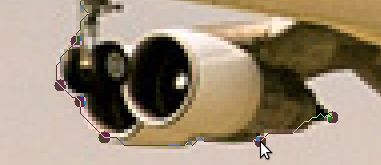
You may have to click and drag more than once for the computer to find
a line that is good enough for what you're trying to do. Also,
you don't have to add a new point to move it, you can click and drag
any point you've created to get it in a better location. The GIMP
will automatically re-draw the line when you let go.
As you go under the airplane, you probably don't have to worry about
every tiny little area. When we shrink this picture down, most of
the details won't be that easy to see.

Once you've made it all the way around the airplane,
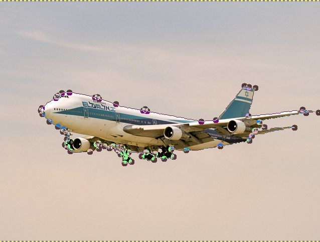
just click inside of your selection to complete it.
Now lets see what just the area we've selected looks like. First
we're going to copy the selection by hitting the Ctrl+C key
combination. Then without doing anything to the image window we're
going to paste it back in there by hitting the Ctrl+V key
combination. Now if you look at the layers dialog, you will see
that there is a new Floating Selection listed there.

We're going to go ahead and make this into a full-fledge layer in the
image by right clicking on it and selecting "New Layer". Once
we're done with that, we can see both layers in the layers
dialog.
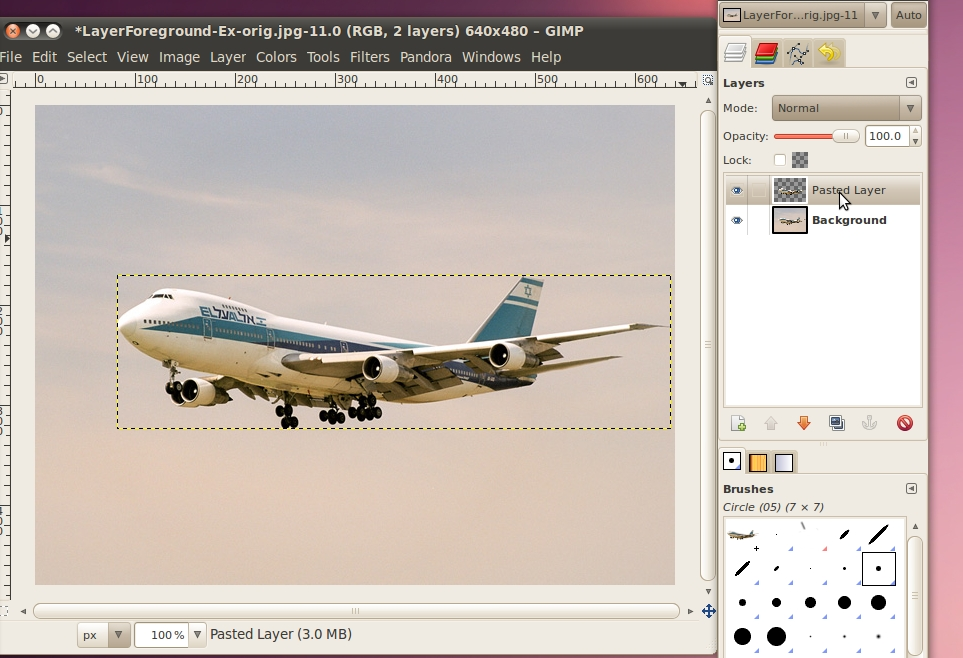
Now that we're using layers, we should probably have a quick
explanation of what they are.
It is probably easiest to think of layers as a stack of transparencies,
where the content of what is on each layer is combined together to make
up the image that we see. It is possible to have a layer that is
completely colored in, in which case nothing from the layers below that
can be seen. Likewise, it is possible to use the alpha channel to
control how transparent something is to the layers below it. For
instance if we had a bright orange (not transparent) layer on top of an
image of car, you wouldn't be able to see the car. However, if
you turned the alpha level of the orange layer down so it was more
transparent, you could see the car, but it would have an orange tint to
it.


In addition, a layer doesn't have to take up the whole area of the
image. For example, when we pasted the airplane back in to the
same picture, the layer that was created only consisted of a box big
enough to contain the selection. You can see its outline above in
the screen shots where it was pasted. Another example of layers
that aren't the size of the full image is text. Any time you use
the text tool to write on an image, it will automatically create a new
layer that the text is in, and that layer will be a rectangle just
large enough for the text to fit in to.
But back to our airplane picture. Now that we have a layer that just
contains the pasted image of the airplane, we can hide the layer with
everything in it and see just what we pasted. Just click the eye
icon next to the background image to hide it.
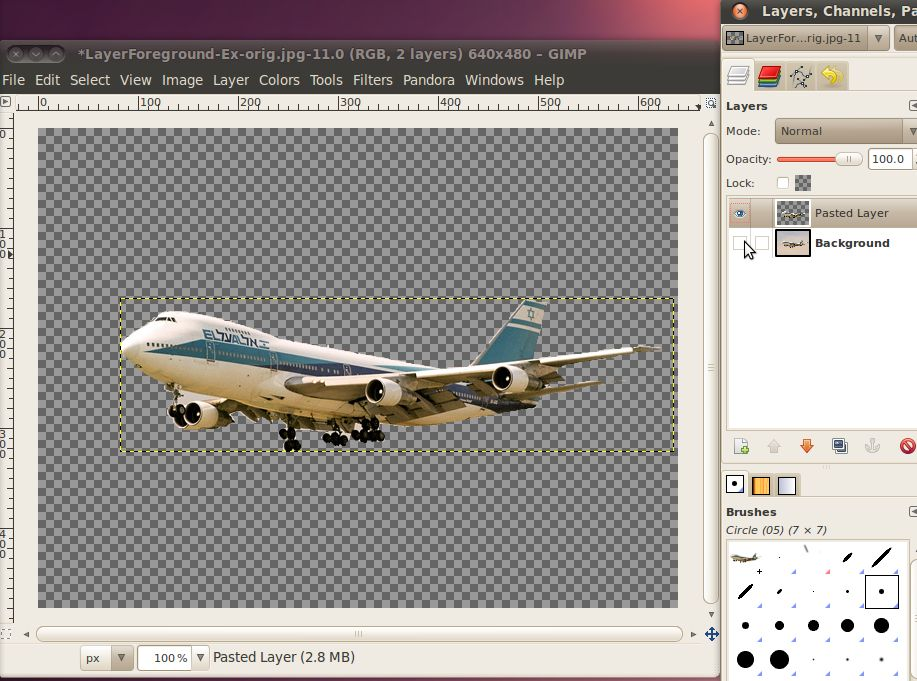
Now we've got the airplane that we selected (and copy/pasted) and the
default GIMP background telling us that everything else in the image is
transparent.
If we zoom in, we can see that our selection wasn't perfect.
There is a bit of sky remaining around the main landing gear, and a
triangle between the front landing gear and the wing that extends down
to the left.

This isn't going to be a problem, since it will be very small in our
final image, but we can clean it up just for the practice.
We're going to use the erase tool to go in and remove those pieces of
sky.
First lets select the erase tool.

The eraser is one of the tools that has a brush associated with
it. A brush is simply the pattern that the tool operates on, the
most common brushes are circular like, with varying sizes. For
this I would recommend using a Circle (03) brush, or possibly Circle
(01) for some of the smaller, more detailed areas. The (03) and
(01) refer to the size of the brush, so the (01) is smaller. To
select the correct brush, click the brush picture next to the word
"Brush:" in the Eraser Tool Options dialog.

Now that we have a decent brush, we can use the eraser to remove parts
of the image that we don't want. Just click once to remove the
exact amount under the brush, or click and drag around to remove
wherever you drag the brush. You'll notice that when you remove
something, you see the gray checkered background. This indicates
that this layer is now completely transparent in that spot.
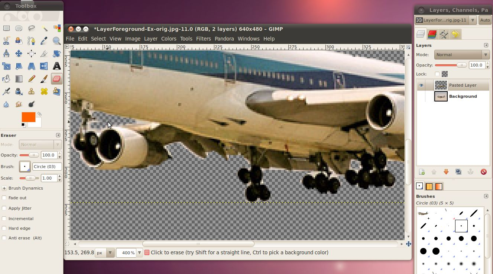
Now that we've cleaned up the airplane, its time to import it into the
photo of the Statue of Liberty. To do that, first we want to
re-select the cleaned up airplane. Since that is all that is
current layer (this only works on the current layer, even if the other
layers are visible) we will only get the airplane when we simply select
everything. To select everything simply enter the Ctrl+A key
combination (also the menu Select -> All works). Now you will
see a line around the whole layer's area. Once again, we're going
to copy this by hitting Ctrl+C.
Now we have the airplane copied to the clipboard, lets bring up the
image window for the Statue of Liberty photo and paste it there using
Ctrl+V.

Woah! Its huge! If we go back and look at it, the picture
of the airplane was 640x480, and the picture of the Statue of Liberty
was the same dimensions 640x480. That means that something that
takes up half of the area in the first picture will also take up half
of the area in the second picture. It is important to understand
that the zoom level that you have each picture set to doesn't impact
how big the item you are pasting is, only the number of pixels it takes
up.
Don't worry though, we can easily re-size the airplane to make it fit
better. First, lets make the airplane that we just pasted into
the image its own layer. In the layers dialog right click on the
layer that says "Floating Selection (Pasted Layer)" and click "New
Layer...". Now we have a seperate layer we can play around
with.
To re-size it, we will use the menu Layer -> Scale Layer...
Setting it to about 30% should look right. Do it just like in the
section on re-sizing pictures, change the dropdown to say "percent"
then put 30% into one of the
boxes and click the "Scale" button.
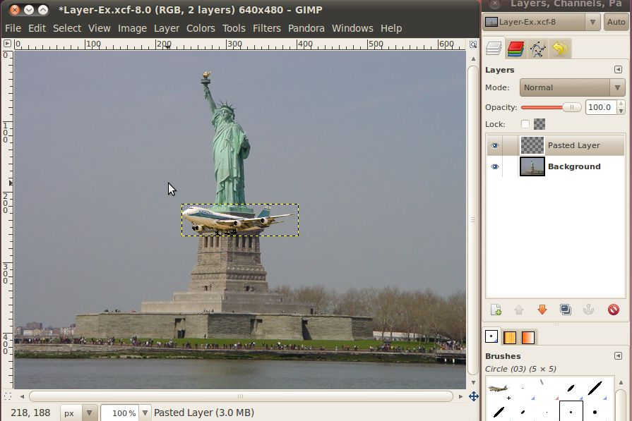
Now we should have an appropriately sized airplane, but it is right in
the middle of the picture, in front of the statue...not a very
realistic location for an airplane. It would be nice if we could
move it up into the sky.
To move it, we'll just use the move tool. Pick it from the toolbox
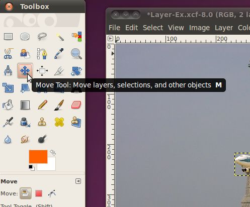
then just click inside the selection box with the airplane, and drag it
to a nice spot in the sky.

That looks pretty good, but what would really sell the picture is if it
were flying behind the statue of liberty. Anyone can copy and
paste an airplane on top of a picture, but to hide it behind
something...that's really going to take a professional!
To do this, we're going to select an area of the statue, without any of
the sky behind it, using our intelligent scissors tool. Then
we'll paste that selection into a new layer. Finally we'll put
the airplane layer in-between the background layer, and the new layer
with part of the statue.
We don't need to select the whole statue, just enough to get the
airplane behind. I think part of the arm should work well.
First, be sure to make sure the background layer is the active layer
(it will be the highlighted one) by clicking on it. Then use the
intelligent scissors tool to select the area.
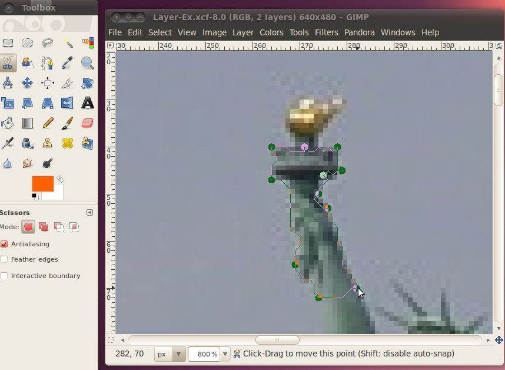
When you have a good area click inside it (or hit the Enter key) to
make the area an actual selection. Then hit Ctrl+C to copy and
Ctrl+V to paste. Now you should have a floating selection
layer. Right click on it and select new layer to make this part
of the arm a new layer.
Now we have three layers in the image, its getting tough to keep track
of which one is which. To make it easier the GIMP will let you
set the name of the layer to whatever you want. Just double click
on the layer name and type something descriptive like "arm" or
"airplane".
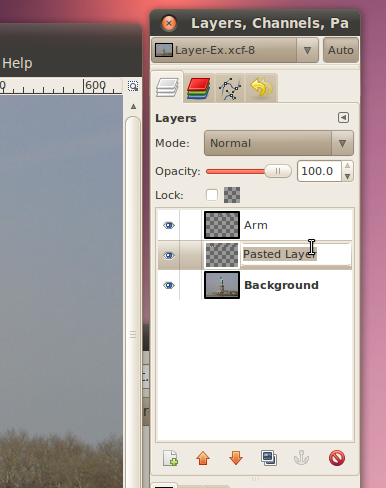
Okay, now we have all the pieces in place. All we have left to do
is to move the airplane behind the arm of the statue. To do this,
make the airplane layer the active one and go click on the move
tool. Now just drag the airplane over to the correct spot behind
the arm.
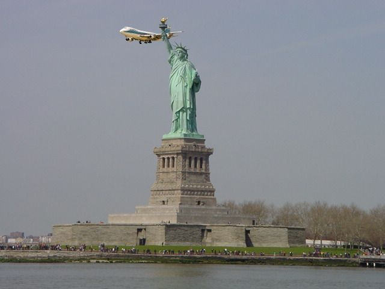
I'd say that looks pretty good!
Exercise
Here are some more pairs of images you can try this out with.
LayerBackground-A-orig.jpg
LayerForeground-A-orig.jpg
LayerBackground-B-orig.jpg
LayerForeground-B-orig.jpg
LayerBackground-C-orig.jpg
LayerForeground-C-orig.jpg
Adjusting lighting
Good lighting is the single most important element needed to take a
good photograph. Unfortunately the lighting conditions aren't
always good for a photographer. There are some things that
can be done by the photographer to work with bad conditions, for
example indoors at very close distances they can use a flash, but often
the photographer will end up with an image that doesn't have correct
lighting.
Typical results are overexposed (when too much light is picked up by
the camera sensor), underexposed (when not enough light is picked up by
the camera sensor), and an image where parts are simultaneously over
and under exposed. (Right-click the link for each picture and
save it to your disk)
Overexposed

Underexposed

Parts are over and under
exposed.

We are going to go through these three images and try to fix some of
the lighting issues with them. Lets start by opening the
overexposed photo in the GIMP.
There are three tools we will look at to fix lighting issues with these
image, the first one is by far the simplest. It it is the
Brightness-Contrast tool. You can open it by clicking the menu
Color -> Brightness-Contrast...

You can see there are two sliders that adjust brightness and contrast
of the image. A way to think of brightness is the average of all
the pixels, the closer they all are to white, the brighter the picture
is http://en.wikipedia.org/wiki/Brightness.
Contrast represents how much difference there is between the pixels in
the image. http://en.wikipedia.org/wiki/Contrast_(vision)
The above image is very bright and rather low contrast. To try to
remedy this, lets use the brightness slider to lower the brightness,
and then the contrast slider to raise the contrast.

As you can see, modifying the image in this manner will really bring
out the color of the image. Also, you can see more detail,
like the features of the snow-covered mountains in the
background. When you like how it looks, hit OK for the changes to
be written to the image.
For a simple picture such as this, that might be enough, but sometimes
you need a little more control over the picture than just the
brightness and contrast. First, lets re-set the picture, to get
back to the unaltered version we can just undo (Ctrl+Z) enough times
to remove all the changes we've made, or we can simply click File ->
Revert to get all the way back.
Once we're back to the beginning, we will modify the image again, with
a higher level of control this time.
To get to this next level of control, we'll use the Levels dialog, by
selecting the Colors -> Levels menu.

There are three important parts of this tool that we will focus
on. The first is the "Channel" drop down. If you click this
you will see the options for "Value", "Red", "Green", "Blue", and
"Alpha" which is grayed out. We won't be using the R, G, B, or A
channels here, but just be aware that you can do the same thing we are
going to learn about in a moment to any of the color channels by
themselves.
Here, we're going to focus on the value channel. Selecting the
value channel causes the tool combine all three color channels into one
and work with it in that manner, this value channel can be though of as
the same image if it was converted to 8-bit black and white. This
mode is really called "grayscale" because there can be 256 different
levels of gray. Here's the image actually converted to grayscale
as an example.

Notice how the image is very bright, almost white. Even the dark
areas are only very light gray, definitely not black.
Looking back at the previous example with the brightness-contrast
dialog, we can now get a clearer understanding of what it was
doing. The decreasing the brightness changed the all the
different shades of the above image to a darker shade of gray and
increasing the contrast made the darkest part of the image more dark
while leaving the lightest part alone. The only difference is
that the GIMP didn't need to have a grayscale image to do this, it
could mathematically determine the levels that would correspond to the gray image for the different colors, called the values.
In the box below the channel selection under the title "Input Levels"
is a graph that is called a histogram. This histogram tells us
the number of pixels in the image that correspond with each
value. Below the histogram is a gradient from black (left) to
white (right), this gradient is actually the scale for that axis of the
graph. So, the height of the graph over a particular value along
that gradient corresponds with the number of pixels that have that
value. Because this image is so overexposed, the graph shows that
almost all the pixels are to the very far right (white) part of the
graph.
Before we move on, lets look at a picture with a more normal
histogram.

As you can see from the grayscale image on the right, a lot of the
image, where there is the grass background, is rather dark, but not
quite black. Most of the birds is rather light, but only a tiny
section of them is really white. Thus we see a huge part of the
graph in the dark section, about a quarter of the way up the
graph. We see another peak towards the right where the birds'
bodies are, and just a tiny amount trailing off to the completely black
and white sections at either end of the graph.
Getting back to our overexposed picture from the mountains, we can see
that the histogram shows that it is almost all completely to the right
(white) side of the graph.

In fact, the true white (value of 255) has quite a few pixels.
That means that these pixels are completely over exposed (also known as
burned), and the areas where there are a lot of these can never be
corrected to add more detail. Any information that the camera may
have found about them was lost because they are at the maximum
value. That is just the limit of the 0-255 scale. However,
we can use our tools to bring out some more detail on all those other
pixels.
For more details about histograms, check out this great website: http://www.cambridgeincolour.com/tutorials/histograms1.htm
You will notice under the histogram there are three triangles. We
can use these triangles to set the darkest color in the image, the
brightest color in the image, and the middle color in the image.
To help fix this image, we are going to move the darkest color
up. This will cause all the pixels represented in the histogram
to the left of where we move the arrow to have their value to set to
zero or true black. Every other pixel else in the image will have
its value reset so that they take up the entire range from 0 to 255
while keeping their existing relationship to all the other
pixels.

There, that looks a lot better, we can see all the color of the
foreground and make out some features on the mountains in the
background. There's one last adjustment we can make here, and
that is to change the mid level to tone down some of the bright
brown/red colors that have taken on an almost unnatural
appearance. Just slide the middle, gray triangle a bit back to
the left and check the results.

There, that looks pretty good. When you're happy with your
settings, click OK to write them to the image.
Now there's one more tool that we can use that will give us even more
control over those colors in the middle, that is the curves tool.
After re-setting the image back to the beginning (either use Ctrl+Z or
Revert) click Color -> Curves to bring up the dialogue.

You can see in the background that it has a histogram on it. The
only difference is now there is also a gradient on the vertical axis,
that corresponds to the line running across the graph. This line
is the curve that we will be manipulating. The end of the curve
that is on the bottom side of the window corresponds to the dark
triangle from the levels dialog, and the end of the curve that is on
the upper side corresponds to the white triangle from the levels
dialogue. The whole curve in the middle is a much more
complicated version of the gray triangle from the levels
dialogue.
We can go ahead and set the low end back up to where we had the dark
triangle in the previous example. Once that is done, we can click
and drag any point on the line going through the graph to create curves
in it. This allows different values in the image to be raised and
lowered differently. You can drag multiple parts of the curve to
make complex systems of lightening and darkening different original
values.

Here I have moved the low end value up about two thirds of the way
across the graph, then the curve jumps a little bit and then levels off
giving a dark (but not completely black) value to the pixels near that
end. The then increases in the lighter pixels keeping them
increasing in lightness up to white.
From the curves dialog you can quickly and easily play around with lots
of different values for the image until you have exactly what you
want. Then just click OK to write the change to the image.
Now that we've got all the tools in hand, lets go and try this on the
underexposed example. Lets open it up in the GIMP and jump strait
to the curves dialog.

Here we can see that the histogram is quite a bit broader than it was
for the overexposed image. This would have held us back a bit if
we were just using the brightness-contrast or levels dialogs, but not
in the curves dialog. The first thing we should do is lower the
highest value down a bit, to about where the histogram starts trailing
off. Just click on the circle along the top and drag it left
keeping it on the top until it is over the end of the histogram.
The next step is to bring out some of the color in the dark
shadows. We can do this by increasing the brightness of the curve
while it is in the further left areas of the graph.
Continue to experiment with this until you find something that looks
good to you, then hit the OK button.
Finally, lets open up the image that has parts both over and under
exposed. When we've got it open, we can see that there is a
section on the left, in the trees that is almost completely dark, while
at the same time the mountains on the right are too bright and washed
out.
If we go and open the curves dialog we can try to lower the brightness
on the bright parts, and raise it on the dark parts, that makes it a
little better, but still doesn't make the image look that great.

Instead, what we need to do is lower the highest possible brightness
for the dark parts, and raise the lowest possible dark for the bright
parts. But how can we do that all in the same image? The
trick is that you can use the curves (and levels and
brightness-contrast) tool on selections
of an image instead of the whole image. So all we have to do is
select the dark part, perform a correction there, then select the
bright parts and perform a different correction there.
To do these selections we'll give the fuzzy select tool a try.

Once we have it selected, we click on a pixel in the area we want to
select, then while holding the mouse button down, move the mouse down
and left to grow the area. The Fuzzy Select tool will
automatically grow the area in a way where it selects other nearby
pixels that have a similar color or value. One tweak that we can
make to this tool is to enable the "Feather Edges" option in the fuzzy
select tool options. This will cause the area that it selects to
blur the line between what is and isn't selected. Doing this will
cause the level adjustments that we are going to make to decrease
around the edges so that you don't get sharp differences between
sections.
So, lets go ahead and pick a pixel in the dark area behind the
trees. While holding the mouse button down, move the mouse down
and to the left, you will see the selected area grow. Keep it
going until you have the dark area in the trees selected, then let go
of the mouse button.

Now that we have our selection made, we can go ahead and bring up the
curves dialog and work our magic.

Here I moved the maximum white value down to right where the histogram
trailed off. I also lowered the dark a little bit at the bottom.
Click OK, when you're set.
The next step is to select the bright areas. Again we will use
the fuzzy select tool to select the appropriate area.

Once we have the selection, we'll open up the curves dialog again, and make our correction on this area.

This time I simply moved the lowest dark point up to the bottom of this histogram. When you're happy with your settings click OK.
And here we have the final image:

Nice and crisp, with lots of details throught the image.
Exercises
Here are some more examples of complex images with areas over and under exposed.
Levels-A-orig.jpg
Levels-B-orig.jpg
Levels-C-orig.jpg
Skin Corrections
How to smooth out blemishes, wrinkles, etc
Photoshop
Cropping/Resizing/Rotation
Redeye
Layers and Selection
Skin Corrections
Adjusting Lighting
Other Photo Editing Tools
Picasa -- Photo manager built and distributed by google. It
is more for storing photo collections, and managing them online
and offlline, but also has some photo editing ability, like cropping,
redeye removal and more. Available for Linux, Windows and Mac. -
http://picasa.google.com
Paint.NET -- Similar, but less powerful than Gimp and
Photoshop. Only available for Windows, but is free, libre, and open
source software. - http://www.getpaint.net/
Corel Paint Shop Photo Pro -- Almost as powerful as Gimp
and Photoshop, but a substantially different interface from them. -
http://www.corel.com/servlet/Satellite/us/en/Product/1208716806081
Microsoft Paint -- Comes built in with windows, but is
very basic. Even things like cropping and re-sizing are very
difficult. It is usable if you want to add a little text to an
image, or draw over something so that others can't see it (like
blanking out a screen name or IP address in a screenshot), but not
much beyond that.
Microsoft Photo Editor or Photo Manager -- Tools
from Microsoft that come with Microsoft Office. Useful for basic
editing, such as cropping and re-sizing.
ImageMagick -- A command line based tool (there are also
various graphical user interfaces for it) that instead of editing an
image by click on it edits the image by specifying commands that can
be done to it (e.g. -resize 30%, -crop 120x120, convert image.jpg
image.png and lots more). This is really great if you have a lot of
images and want to do the same thing to all of them. For instance
you can easily resize hundreds of images in a few seconds instead of
opening them up in the Gimp and resizing them one by one. Image magic
is free, libre, and open source software and runs on Linux, Windows,
and Mac. - http://www.imagemagick.org/
Hugin -- This is a tool that
will create a very high resolution panoramic photography by stitching
together multiple, overlapping photographs. When you have a
large, stationary (at least for a minute) scene like mountains, lakes,
etc., you can take several pictures where each one overlaps ~1/3 of the
one next to it. Then feed all these images into Hugin, and it
will give you an output image that combines all of the input images
into one. http://hugin.sourceforge.net/
UFRaw -- Some, more
advanced, cameras will allow you to get your images out of them in a
format generally called "Raw". This keeps any of the data that
might have been lost in the JPEG compression, as well as more data that
came from the sensors about the image. This extra data is useful
for professionals, as it allows them better control over
color/brightness corrections. UFRaw is a program that will work
with this raw images, it also has a plugin for GIMP that will let you
work with them in the GIMP. http://ufraw.sourceforge.net/
FSpot -- A photo manager,
similar to Picasa, but open source (unfortunately, only runs under
linux). http://f-spot.org/
Shotwell -- A photo manager,
similar to Picasa, but open source (unfortunately, only runs under
linux). http://yorba.org/shotwell/
Vocabulary
Pixel - One dot in the image, composed of Red Green and Blue components
(and possibly Alpha for indicating if it has transparency)
Dimensions - The size of the picture, indicated by Width X Height.
Channel - The different red-green-blue-alpha components
Lossless Compression - Storing a file so that it can be perfectly
re-created
Lossy Compression - Storing a file so that it is smaller, but loses
some amount of detail
Rotate - Change the orientation of the image.
Crop - Cut off the an area around the image.
Re-Size - Change the number of pixels that the image is without cutting
off any parts of the image.
Layer -
Selection -
Attribution
Pixel Value Image, Daniel G et al.,
http://commons.wikimedia.org/wiki/File:Rgb-raster-image.png,
Public Domain
Additive Color, Webaware,
http://commons.wikimedia.org/wiki/File:AdditiveColor.svg,
Public Domain
Lossy Demonstration Lossless, ,
http://en.wikipedia.org/wiki/File:LossyDemonstration-Original.png
, CC-BY-SA
Lossy Demonstration Medium, http://en.wikipedia.org/wiki/File:LossyDemonstration-84less.jpg,
CC-BY-SA
Lossy Demonstration High,
http://en.wikipedia.org/wiki/File:LossyDemonstration-98less.jpg,
CC-BY-SA
Gimp Introduction, Gimp Documentation
Team, http://docs.gimp.org/2.6/en/introduction.html#introduction-gimp,
GNU FDL
Gimp Main Window Overview, Gimp
Documentation Team, http://docs.gimp.org/2.6/en/gimp-concepts-main-windows.html,
GNU FDL
Image Window Description Graphic, Gimp
Documentation Team, http://docs.gimp.org/2.6/en/images/using/imagewindow-description.png,
GNU FDL
Image Window Descirption, Gimp Documentation Team, http://docs.gimp.org/2.6/en/gimp-image-window.html,
GNU FDL
Great Egret Nest, Mike Baird, http://commons.wikimedia.org/wiki/File:Ardea_alba;_3_chicks,_Morro_Bay_Heron_Rookery_2_-_by_Mike_Baird.jpg,
CC-BY
Three Friends, Russell Harrison, http://www.flickr.com/photos/rharrison/1467377710/,
CC-BY-SA
Two Dancers, Russell Harrison, http://www.flickr.com/photos/rharrison/1551648804/,
CC-BY-SA
Voo Doo Music Fest, Katrina Szela, http://www.flickr.com/photos/93017934@N00/287761814/,
CC-BY
Mike Roe with Julie and Audrey Quinn, James Emery, http://www.flickr.com/photos/emeryjl/891366632/,
CC-BY
Statue of Liberty, Gavcos, http://commons.wikimedia.org/wiki/File:Statue_of_liberty.jpg,
CC-BY
El Al 747-200, Przemyslaw "Blueshade" Idzkiewicz, http://commons.wikimedia.org/wiki/File:ELAL_747-200_4X-AHQ_EPWA_24_08_2004.jpg,
CC-BY-SA
Intelligent Scissors Tool, Gimp Documentation Team, http://docs.gimp.org/2.6/en/gimp-tool-iscissors.html,
GNU FDL
Stock Car Brazil Pace Car, Morio, http://commons.wikimedia.org/wiki/File:Stock_Car_Brazil_Pace_Car.jpg,
CC-BY-SA
Chicago from UIC, Hied5, http://commons.wikimedia.org/wiki/File:Chicago_from_UIC.JPG,
CC-BY
Airplane over Autobahn, poolie, http://www.flickr.com/photos/poolie/2611727104/,
CC-BY
Chicago skyscrapers, Stephen Hanafin, http://www.flickr.com/photos/shanafin/3539282102/,
CC-BY-SA
2007/10/10 EC-HFP, Javier Pedreira, http://www.flickr.com/photos/wicho/1789307019/,
CC-BY
Frankfurt skyscrapers, Danilo Paissan, http://www.flickr.com/photos/danilopaissan/2732030140/,
CC-BY-SA
Lufthansa Boeing 737-300, daspaddy, http://www.flickr.com/photos/daspaddy/3375583143/,
CC-BY
Overexposed Mountains, avry xvx, http://www.flickr.com/photos/kimclit/4438966573/,
CC-BY-SA
Dark Cloud Over Kota Kinabalu, thienzieyung, http://www.flickr.com/photos/thienzieyung/4829364637/,
CC-BY
Colchuck Lake, Mahalie Stackpole, http://www.flickr.com/photos/mahalie/253842823/,
CC-BY-SA
P5290060, Steve Broomfield, http://www.flickr.com/photos/spikycircle/18070686/,
CC-BY
Large Rock, Homini:), http://www.flickr.com/photos/homini/4327478688/,
CC-BY
Antler Lake 2, Holly Lawrence, http://www.flickr.com/photos/goat_girl_photos/228884109/,
CC-BY-SA
Curly Hair Girl, See-Ming Lee, http://www.flickr.com/photos/seeminglee/870001120/,
CC-BY-SA
Blue Eyed Girl, See-Ming Lee, http://www.flickr.com/photos/seeminglee/870028244/,
CC-BY-SA
Circle Glasses Guy, See-Ming Lee, http://www.flickr.com/photos/seeminglee/870005490/,
CC-BY-SA
Dark Skinned Guy, See-Ming Lee, http://www.flickr.com/photos/seeminglee/869124633/,
CC-BY-SA


{kind=link}
{kind=link}
{kind=link}
{kind=link}
{kind=link}
{kind=link}
{kind=link}
{kind=link}
{kind=link}
{kind=link}
{kind=link}
{kind=link}
{kind=link}
{kind=link}
{kind=link}
{kind=link}
{kind=link}
{kind=link}
{kind=link}
{kind=link}
{kind=link}
{kind=link}
{kind=link}
{kind=link}
{kind=link}
{kind=link}
{kind=link}
{kind=link}
{kind=link}
{kind=link}
{kind=link}